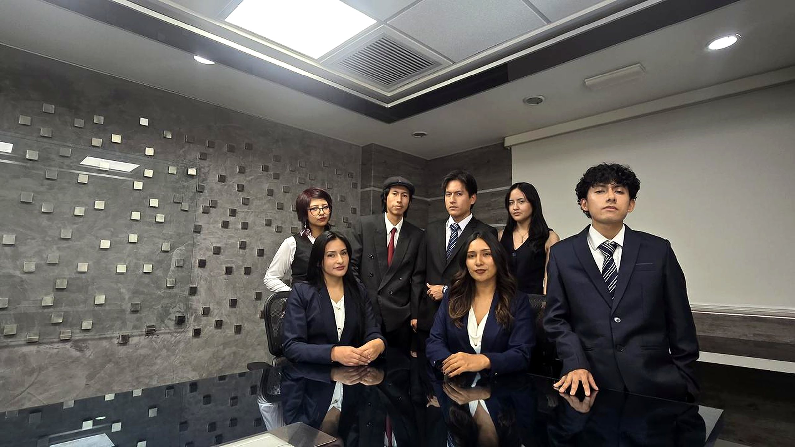

Nosotros
Quiénes somos, qué buscamos y cómo nos organizamos.
Estudiantes comprometidos con el Derecho Penal
El CEJUP es una organización estudiantil autónoma conformada por estudiantes de Derecho.
Desde 2026 reúne a estudiantes interesados en las ciencias penales en un espacio académico y práctico, donde la investigación, el debate y la formación se complementan para fortalecer las competencias jurídicas de sus miembros.

Misión
Fortalecer los conocimientos y habilidades de los estudiantes de Derecho, así como de personas externas interesadas en las ciencias penales, a través de actividades multidisciplinarias que promuevan la formación integral.
Visión
Posicionarnos como un referente académico nacional en el estudio, investigación y debate de las ciencias penales, impactando positivamente en la comunidad jurídica mediante iniciativas de alta calidad.
Lo que nos proponemos
Desarrollar actividades académicas y prácticas que complementen la formación en ciencias penales.
Fomentar la investigación jurídica en temas penales relevantes y de actualidad.
Establecer redes de contacto con instituciones y profesionales especializados.
Promover una cultura de ética, responsabilidad y excelencia en la comunidad jurídica.
Formación, investigación y difusión
Formación
Talleres de litigación y redacción jurídica, seminarios y conversatorios con especialistas, simulaciones de juicios y análisis de casos.
Investigación
Proyectos en equipo sobre temas de relevancia penal, presentados en congresos y publicados en revistas jurídicas.
Difusión
Podcasts, publicaciones y contenido accesible en redes para compartir conocimiento sobre Derecho Penal.
Consejo Directivo
El CEJUP se organiza en direcciones que lideran, coordinan y supervisan las actividades del Círculo.
Presidencia
Representa al CEJUP, dirige sus actividades y vela por el cumplimiento de sus objetivos.
Vicepresidencia
Coordina las comisiones y asegura el buen funcionamiento interno.
Dirección Académica
Diseña programas de formación, talleres y capacitaciones.
Dirección de Investigación
Coordina proyectos de investigación y publicaciones.
Dirección de Difusión y Comunicación
Administra la comunicación, las redes sociales y la promoción de eventos.
Dirección de Administración
Recursos Humanos (selección y desarrollo de miembros) y Finanzas.
Estudio · Investigación · Debate